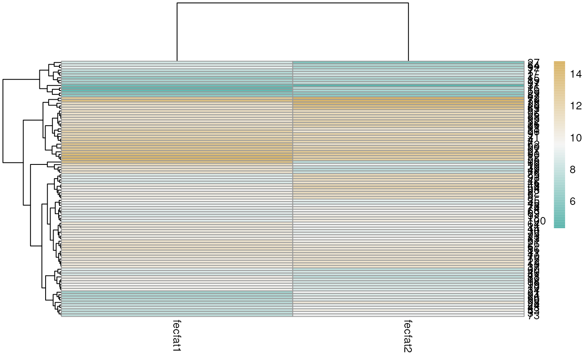

Session 10 lab exercise: Repeated Measures and Longitudinal Analysis II
Levi Waldron
Source:vignettes/session_lab.Rmd
session_lab.RmdLearning objectives
- Gain an intuitive understanding of ICC through simulated data
- Simulate correlated grouped data
- Use a heatmap and spaghetti plot to visualize correlated grouped data
- Create a custom color-blind friendly palette for any plot using https://colorbrewer2.org/ and the RColorBrewer library
- Fit random and mixed-effects models to correlated grouped data
- Make QQ plots for mixed-effects models
- Calculate ICC from a random or mixed-effects model
- Fit a population average model, aka marginal model, using GEE
Exercises
- Simulation of correlated grouped data
- Create a heatmap of simulated data to visualize the group effect
- Create a spaghetti plot of the simulated data to visualize the group effect
- Fit a random effects model with no covariates and a random intercept. Does it recover the group and residual variances you simulated?
- Estimate ICC from the model above. Is it what you expected from the group and residual variances you simulated?
- Estimate ICC simply by calculating the correlation between fecfat1 and fecfat2. Is it similar to the estimate above?
- Load and do basic cleaning of the Georgia Birthweights dataset.
- Make a boxplot and spaghetti plot for the Georgia Birthweights dataset
- Test the null hypotheses that baseline birth weights do not vary by mother
- Create QQ plots of residuals and random intercepts for this model.
- Test the null hypotheses that the effect of birth order not modified by mother’s age at first birth or weight of first infant.
- Repeat above hypothesis tests using GEE
Simulation of correlated grouped data
Simulate a dataset with two fecal fat measurements on each of
n study subjects, where the measurement is the sum of a
subject mean plus random measurement error. Subject means are
distributed \(N(10, \sigma_{subj})\)
and measurement errors are distributed \(N(0,
\sigma_{resid})\). Start with the following values:
sigma_subj <- sqrt(3)
sigma_resid <- 1
n <- 100## ── Attaching core tidyverse packages ──────────────────────── tidyverse 2.0.0 ──
## ✔ dplyr 1.1.2 ✔ readr 2.1.4
## ✔ forcats 1.0.0 ✔ stringr 1.5.0
## ✔ ggplot2 3.4.3 ✔ tibble 3.2.1
## ✔ lubridate 1.9.2 ✔ tidyr 1.3.0
## ✔ purrr 1.0.2
## ── Conflicts ────────────────────────────────────────── tidyverse_conflicts() ──
## ✖ dplyr::filter() masks stats::filter()
## ✖ dplyr::lag() masks stats::lag()
## ℹ Use the conflicted package (<http://conflicted.r-lib.org/>) to force all conflicts to become errors
set.seed(1) # try a different seed!
df <- tibble(subj_mean = rnorm(n, mean = 10, sd = sigma_subj)) %>%
mutate(id = factor(1:n)) %>%
mutate(fecfat1 = rnorm(n, mean = 0, sd = sigma_resid) + subj_mean) %>%
mutate(fecfat2 = rnorm(n, mean = 0, sd = sigma_resid) + subj_mean)
simfun <- function(n = 100,
sigma_subj = sqrt(3),
sigma_resid = 1) {
library(dplyr)
df <- tibble(subj_mean = rnorm(n, mean = 10, sd = sigma_subj)) %>%
mutate(id = factor(1:n)) %>%
mutate(fecfat1 = rnorm(n, mean = 0, sd = sigma_resid) + subj_mean) %>%
mutate(fecfat2 = rnorm(n, mean = 0, sd = sigma_resid) + subj_mean)
return(df)
}
simfun(n=10, sigma_subj = sqrt(3))## # A tibble: 10 × 4
## subj_mean id fecfat1 fecfat2
## <dbl> <fct> <dbl> <dbl>
## 1 11.5 1 12.6 12.9
## 2 8.19 2 8.29 9.68
## 3 13.4 3 13.0 14.2
## 4 9.34 4 8.68 7.47
## 5 12.9 5 12.8 13.3
## 6 12.6 6 13.7 13.1
## 7 10.1 7 9.66 9.79
## 8 11.0 8 10.9 11.2
## 9 8.23 9 6.93 7.36
## 10 10.6 10 11.1 11.2Create a heatmap of simulated data to visualize the group effect
library(pheatmap)
library(RColorBrewer)
mycol <- rev(colorRampPalette(colors = c('#d8b365','#f5f5f5','#5ab4ac'))(100))
pheatmap(select(simfun(sigma_subj = sqrt(3), sigma_resid = 1), fecfat1:fecfat2), color = mycol)
Also play with the values of sigma_subj and
sigma_resid to see what effect this has on the heatmap.
Create a spaghetti plot of the simulated data to visualize the group effect
library(ggplot2)
set.seed(1)
library(tidyr)
simfun(sigma_subj = sqrt(3), sigma_resid = sqrt(1)) %>%
pivot_longer(cols = starts_with("fecfat")) %>%
ggplot(aes(x=name, y=value, group=id)) + geom_line(alpha = 0.25)Also play with the values of sigma_subj and
sigma_resid to see what effect this has on the spaghetti
plot
Fit a random effects model with no covariates and a random intercept. Does it recover the group and residual variances you simulated?
set.seed(1)
df_wide <- simfun(n = 10000, sigma_subj = sqrt(4), sigma_resid = sqrt(1))
df <- pivot_longer(df_wide, cols = starts_with("fecfat"))
library(nlme)##
## Attaching package: 'nlme'## The following object is masked from 'package:dplyr':
##
## collapse## Linear mixed-effects model fit by REML
## Data: df
## AIC BIC logLik
## 78952.58 78976.29 -39473.29
##
## Random effects:
## Formula: ~1 | id
## (Intercept) Residual
## StdDev: 2.026972 0.9988032
##
## Fixed effects: value ~ 1
## Value Std.Error DF t-value p-value
## (Intercept) 9.988608 0.0214649 10000 465.3462 0
##
## Standardized Within-Group Residuals:
## Min Q1 Med Q3 Max
## -2.695148176 -0.506748373 0.004597944 0.511724285 2.743338857
##
## Number of Observations: 20000
## Number of Groups: 10000
intervals(fit)## Approximate 95% confidence intervals
##
## Fixed effects:
## lower est. upper
## (Intercept) 9.946533 9.988608 10.03068
##
## Random Effects:
## Level: id
## lower est. upper
## sd((Intercept)) 1.99574 2.026972 2.058692
##
## Within-group standard error:
## lower est. upper
## 0.9860565 0.9988032 1.0117147Estimate ICC from the model above. Is it what you expected from the group and residual variances you simulated?
Recall ICC for subject \(i\), measurements \(j\) and \(k\): \[\begin{equation*} \begin{aligned} ICC & = corr(x_{ij}, x_{ik}) \\ & = \frac{\sigma_{subj}^2}{\sigma_{subj}^2 + \sigma_{\epsilon}^2} \\ & = \frac{\tau_{00}^2}{\tau_{00}^2 + \sigma_\epsilon^2} \end{aligned} \end{equation*}\]
2.026972^2 / (2.026972^2 + 0.9988031^2)## [1] 0.8046291
ICClme <- function(fit){
cors <- as.numeric(VarCorr(fit))
cors[1] / (cors[1] + cors[2])
}
ICClme(fit)## [1] 0.8046289Estimate ICC simply by calculating the correlation between
fecfat1 and fecfat2. Is it similar to the
estimate above?
select(df_wide, starts_with("fec")) %>% cor()## fecfat1 fecfat2
## fecfat1 1.000000 0.804624
## fecfat2 0.804624 1.000000Load and do basic cleaning of the Georgia Birthweights dataset.
- Fix NA values for
momage - Create a categorical age variable with cut at age <18 vs >=18
- Convert
momidto a factor - Recode the low birthweight variable to a factor, with “0” to “normal” as the reference group and “1” to “low”.
Make a boxplot and spaghetti plot for the Georgia Birthweights dataset
ggplot(ga, aes(x = birthord, y=bweight, group = birthord)) +
geom_boxplot(outlier.shape = NA) +
geom_jitter(width=0.2, alpha = 0.25) +
labs(title = "Georgia birthweight dataset") +
xlab("Birth order") + ylab("Birth weight (g)") +
theme_grey(base_size = 16)
Figure 3: Birth weight as a function of birth order in the Georgia birthweight dataset.
Test the null hypotheses that baseline birth weights do not vary by mother
## Approximate 95% confidence intervals
##
## Fixed effects:
## lower est. upper
## (Intercept) 2913.20418 2995.640 3078.07582
## birthord 27.07478 46.608 66.14122
##
## Random Effects:
## Level: momid
## lower est. upper
## sd((Intercept)) 323.1724 367.2676 417.3794
##
## Within-group standard error:
## lower est. upper
## 423.7298 445.0228 467.3859Create QQ plots of residuals and random intercepts for this model.
qqnorm(residuals(gafit1, type = "pearson"), main = "Pearson residuals QQ plot")
qqline(residuals(gafit1, type = "pearson"))

Test the null hypotheses that the effect of birth order is not modified by mother’s age at first birth or weight of first infant.
## Linear mixed-effects model fit by REML
## Data: ga
## AIC BIC logLik
## 15303.27 15332.69 -7645.635
##
## Random effects:
## Formula: ~1 | momid
## (Intercept) Residual
## StdDev: 364.4842 444.9955
##
## Fixed effects: bweight ~ birthord * agebin
## Value Std.Error DF t-value p-value
## (Intercept) 2978.3873 52.75519 798 56.45676 0.0000
## birthord 38.6175 12.53633 798 3.08044 0.0021
## agebin(17,100] 46.6289 86.72900 198 0.53764 0.5914
## birthord:agebin(17,100] 21.5961 20.60960 798 1.04786 0.2950
## Correlation:
## (Intr) brthrd a(17,1
## birthord -0.713
## agebin(17,100] -0.608 0.434
## birthord:agebin(17,100] 0.434 -0.608 -0.713
##
## Standardized Within-Group Residuals:
## Min Q1 Med Q3 Max
## -5.24250712 -0.43312124 0.04338865 0.53148398 3.30316603
##
## Number of Observations: 1000
## Number of Groups: 200## Linear mixed-effects model fit by REML
## Data: ga
## AIC BIC logLik
## 15198.28 15227.7 -7593.138
##
## Random effects:
## Formula: ~1 | momid
## (Intercept) Residual
## StdDev: 274.526 431.555
##
## Fixed effects: bweight ~ birthord * initwght
## Value Std.Error DF t-value p-value
## (Intercept) 600.3298 199.59828 798 3.007690 0.0027
## birthord 409.8405 51.45612 798 7.964855 0.0000
## initwght 0.7941 0.06499 198 12.217420 0.0000
## birthord:initwght -0.1204 0.01676 798 -7.186579 0.0000
## Correlation:
## (Intr) brthrd intwgh
## birthord -0.773
## initwght -0.982 0.760
## birthord:initwght 0.760 -0.982 -0.773
##
## Standardized Within-Group Residuals:
## Min Q1 Med Q3 Max
## -5.329582374 -0.455327000 0.007433181 0.531084518 4.791970708
##
## Number of Observations: 1000
## Number of Groups: 200Repeat above hypothesis tests using GEE
library(gee)
gagee1 <- gee(bweight ~ birthord*agebin, data = ga, id = momid, corstr = "unstructured")## Beginning Cgee S-function, @(#) geeformula.q 4.13 98/01/27## running glm to get initial regression estimate## (Intercept) birthord agebin(17,100]
## 2978.38730 38.61746 46.62891
## birthord:agebin(17,100]
## 21.59605
summary(gagee1)##
## GEE: GENERALIZED LINEAR MODELS FOR DEPENDENT DATA
## gee S-function, version 4.13 modified 98/01/27 (1998)
##
## Model:
## Link: Identity
## Variance to Mean Relation: Gaussian
## Correlation Structure: Unstructured
##
## Call:
## gee(formula = bweight ~ birthord * agebin, id = momid, data = ga,
## corstr = "unstructured")
##
## Summary of Residuals:
## Min 1Q Median 3Q Max
## -2863.40368 -294.16890 29.24113 339.16644 1756.59632
##
##
## Coefficients:
## Estimate Naive S.E. Naive z Robust S.E. Robust z
## (Intercept) 2978.92557 48.99654 60.7986933 45.82626 65.0047740
## birthord 37.24333 12.48136 2.9839156 12.24704 3.0410073
## agebin(17,100] 52.18848 80.54981 0.6479032 82.95506 0.6291175
## birthord:agebin(17,100] 20.18655 20.51923 0.9837866 20.41810 0.9886593
##
## Estimated Scale Parameter: 330087.7
## Number of Iterations: 3
##
## Working Correlation
## [,1] [,2] [,3] [,4] [,5]
## [1,] 1.0000000 0.2153033 0.3092689 0.2545510 0.3836927
## [2,] 0.2153033 1.0000000 0.4809124 0.4351138 0.3949443
## [3,] 0.3092689 0.4809124 1.0000000 0.6344401 0.4349807
## [4,] 0.2545510 0.4351138 0.6344401 1.0000000 0.4484055
## [5,] 0.3836927 0.3949443 0.4349807 0.4484055 1.0000000
gagee2 <- gee(bweight ~ birthord*initwght, data = ga, id = momid, corstr = "unstructured")## Beginning Cgee S-function, @(#) geeformula.q 4.13 98/01/27## running glm to get initial regression estimate## (Intercept) birthord initwght birthord:initwght
## 600.3298240 409.8405317 0.7940549 -0.1204130
summary(gagee2)##
## GEE: GENERALIZED LINEAR MODELS FOR DEPENDENT DATA
## gee S-function, version 4.13 modified 98/01/27 (1998)
##
## Model:
## Link: Identity
## Variance to Mean Relation: Gaussian
## Correlation Structure: Unstructured
##
## Call:
## gee(formula = bweight ~ birthord * initwght, id = momid, data = ga,
## corstr = "unstructured")
##
## Summary of Residuals:
## Min 1Q Median 3Q Max
## -2748.50271 -242.04489 11.70037 278.75451 2920.36648
##
##
## Coefficients:
## Estimate Naive S.E. Naive z Robust S.E. Robust z
## (Intercept) 852.1852972 168.85833158 5.046747 193.39200182 4.406518
## birthord 207.2267183 50.87766438 4.073039 56.85291664 3.644962
## initwght 0.7119308 0.05498405 12.947951 0.06172936 11.533099
## birthord:initwght -0.0547416 0.01656691 -3.304274 0.01818505 -3.010253
##
## Estimated Scale Parameter: 268548.1
## Number of Iterations: 7
##
## Working Correlation
## [,1] [,2] [,3] [,4] [,5]
## [1,] 1.00000000 -0.1644909 -0.1041232 -0.1045992 -0.02349959
## [2,] -0.16449093 1.0000000 0.6376520 0.5986444 0.43603797
## [3,] -0.10412317 0.6376520 1.0000000 0.7606906 0.41963808
## [4,] -0.10459919 0.5986444 0.7606906 1.0000000 0.46289783
## [5,] -0.02349959 0.4360380 0.4196381 0.4628978 1.00000000Heatmap of GA babies dataset
pivot_wider(ga, values_from = bweight, names_from=birthord, id_cols = momid) %>%
select(-momid) %>%
pheatmap(clustering_distance_rows = "correlation", clustering_distance_cols = "correlation", scale = "column")